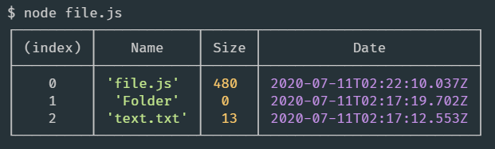

3.1 Praca z plikami
Moduł FileSystem (fs) pozwala na pracę z plikami w Node.js. Obecnie najczęściej
korzystamy z jego wersji promise, dzięki czemu nie musimy korzystać ze składni
callback-ów.
const fs = require('fs').promises;
Najczęściej wykorzystywane funkcje do podstawowych operacji na plikach to:
- fs.readFile(filename, [options]) - czytanie pliku;
- fs.writeFile(filename, data, [options]) - zapis pliku;
- fs.appendFile(filename, data, [options])dodanie do pliku;
- fs.rename(oldPath, newPath) - zmiana nazwy pliku;
- fs.unlink(path, callback) - usunięcie pliku.
Przy operacjach z plikami nigdy nie powinniśmy zapominać o obsłudze błędów.
Należy również pamiętać, że parametr data w funkcji readFile, zawiera obiekt będący
instancją klasy Buffer, zawierający ciąg przeczytanych bajtów, to znaczy surowe dane.
W przypadku prostych plików tekstowych możemy przekonwertować data metodą toString():
fs.readFile('readme.txt')
.then(data => console.log(data.toString()))
.catch(err => console.log(err.message));
Istnieją również metody modułu fs z synchronicznymi wersjami, kończące się na Sync, jak
również i wersje przyjmujące callback.
Możemy je importować poprzez:
const fs = require('fs');
Wtedy wszystkie funkcje nie zwracają promise więc nie możemy wykorzystać składni .then.
Funkcjom synchronicznym nie jest również potrzebny callback, ponieważ są one blokujące i
dlatego też nie są rekomendowane, chyba że wymaga tego obecne zadanie i dobrze
rozumiesz, w jakim celu je stosujesz. Zobaczmy przykłady:
readFileSync
try {
const data = fs.readFileSync("readme.txt");
console.log(data.toString());
} catch (err) {
console.log(err.message);
}
readFile (wersja bez promise)
const fs = require("fs");
fs.readFile("readme.txt", function (err, data) {
if (err) {
console.log("error", err.message);
} else {
console.log(data.toString());
}
});
readFile (wersja bez promise)
const fs = require("fs");
fs.readFile("readme.txt", function (err, data) {
if (err) {
console.log("error", err.message);
} else {
console.log(data.toString());
}
});
Napiszmy skrypt files.js, który będzie odczytał obecny katalog i wyprowadzał do konsoli
jego zawartość: nazwę pliku, jego rozmiar i datę wprowadzenia ostatniej zmiany w pliku.
const fs = require('fs').promises;
fs.readdir(__dirname)
.then(files => {
return Promise.all(
files.map(async filename => {
const stats = await fs.stat(filename);
return {
Name: filename,
Size: stats.size,
Date: stats.mtime,
};
}),
);
})
.then(result => console.table(result));
Przeanalizujmy ten kod bardziej szczegółowo. Na początku podłączamy standardowy moduł fs
w wersji z promisami:
const fs = require('fs').promises;
Przy pomocy ścieżki ze zmiennej __dirname odczytujemy wszystkie pliki z obecnego
katalogu.
W rezultacie działania funkcji readdir, w zmiennej files otrzymujemy promise który
zwróci tablicę nazw plików i katalogów z obecnego katalogu.
Zwracamy więc tablicę promisów gdzie każdy analizuje kolejny element files
Zmienna stats zawierać będzie szczegółowe informacje o każdym kolejnym pliku i katalogu.
Zwracamy obiekt z nazwą pliku oraz
- stats.mtime - czas ostatniej zmiany pliku
- stats.size - który określa rozmiar pliku w bajtach.
Rezultat wykonania tego promise, czyli zmienną result, przekazujemy funkcji
console.table i dzięki niej wyświetlimy tabelkę z informacjami przy wykonaniu naszego
skryptu w konsoli.
Wynik wykonania skryptu:
